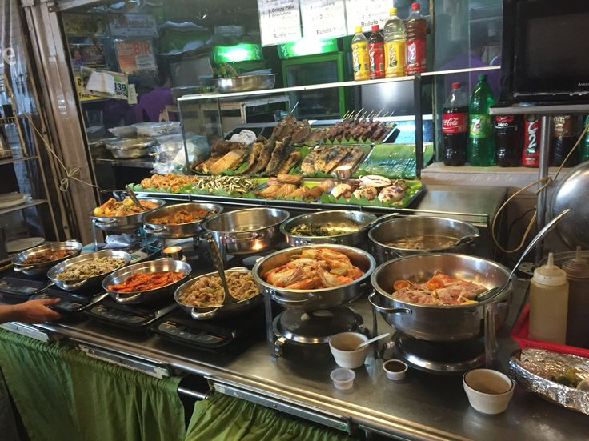

Busog kana, hassle-free pa!
Overview
MCC Canteen is a cafeteria management website designed to make food selection and ordering easier and more convenient for students and staff. It enables users to browse the available menu, view food items and their prices, and conveniently place orders through the website. Our objective is to provide a simple, accessible, and user-friendly platform that makes cafeteria transactions more organized and efficient, giving students and staff a hassle-free food ordering experience.